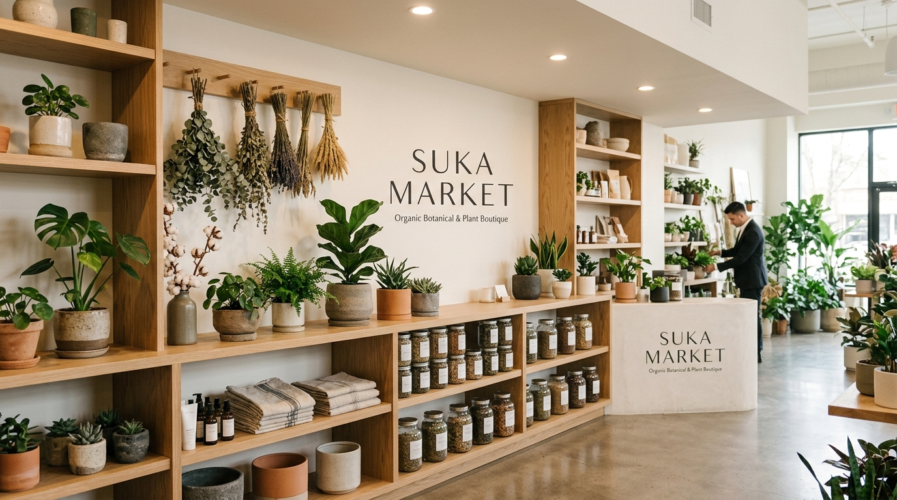
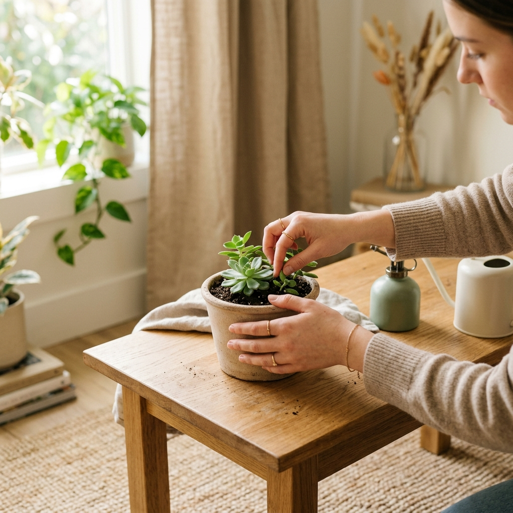

Somos SUKA MARKET, una Entidad Sin Ánimo de Lucro comprometida con la protección de la biodiversidad vegetal, el estudio de especies nativas y la divulgación de prácticas sostenibles en la Reserva de Biosfera Seaflower.

Promovemos el cuidado de la flora nativa mediante talleres educativos, exhibición de plantas botánicas y modelos de desarrollo comunitario en el archipiélago.

Conservación Endémica
Protección del ecosistema insular
Constituida formalmente el 10 de Mayo de 2005 ante la Cámara de Comercio de San Andrés, Providencia y Santa Catalina, SUKA MARKET nació con la visión de salvaguardar el patrimonio natural del archipiélago.
A través de actividades clasificadas bajo el código CIIU R9103 (Jardines Botánicos y Reservas Naturales) e investigaciones aplicadas (CIIU M7220), articulamos a la comunidad, la ciencia y la educación ambiental para generar un impacto tangible y duradero.
Preservación de Especies: Mantenimiento y estudio de flora insular en riesgo y fomento de micro-reservas.
Investigación Experimental: Estudios participativos socioambientales para el fortalecimiento comunitario.
Cultura y Educación: Talleres ciudadanos sobre germinación responsable, huertos y compostaje.
Desarrollamos nuestras actividades en plena concordancia con el objeto social registrado ante las autoridades mercantiles y tributarias de Colombia.
Propagación, conservación y monitoreo de especies botánicas insulares. Creamos bancos vivos de semillas, enriquecimiento de flora y espacios de apreciación de la biodiversidad caribeña.
Investigaciones aplicadas sobre impacto climático insular, saberes etnobotánicos tradicionales y desarrollo de metodologías para la resiliencia social y ecológica en territorios costeros.
Fomento de redes comunitarias sostenibles, voluntariado ecológico, talleres sobre plantas ornamentales y comercialización responsable de insumos botánicos para la autosuficiencia ecológica.
Información pública verificada de acuerdo con el Certificado de Inscripción de Documentos expedido por la Cámara de Comercio.
Imágenes que reflejan nuestro compromiso con las plantas ornamentales, la educación ambiental y el amor por la naturaleza insular.
Especies aclimatadas e insumos orgánicos para el cuidado del hogar.
Capacitaciones comunitarias para la multiplicación de especies verdes.
Exploración de la exuberancia vegetal y micro-hábitats insulares.
¿Deseas conocer más sobre nuestros programas botánicos, voluntariado o alianzas socioambientales? Estamos a tu completa disposición en San Andrés Isla.
Completa el formulario y te responderemos a la mayor brevedad posible.
Nuestro equipo de SUKA MARKET se pondrá en contacto contigo a la brevedad.